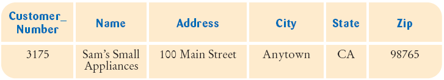

previous
|
start
|
next
Selecting Subsets
You can select rows that fit a particular criteria
When you want to select a subset , use the
WHERE
clause
The query to find all customers in California:
SELECT * FROM Customer WHERE State = 'CA'

The query to select all customers NOT in California
SELECT * FROM Customer WHERE State <> 'CA'
previous
|
start
|
next